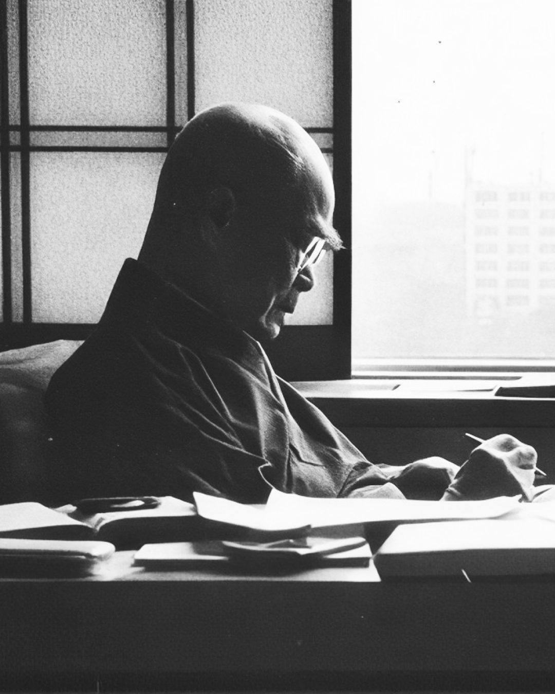
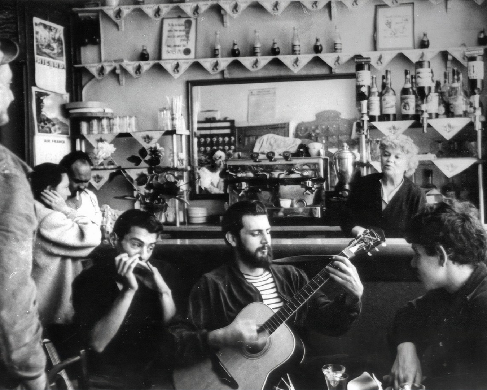
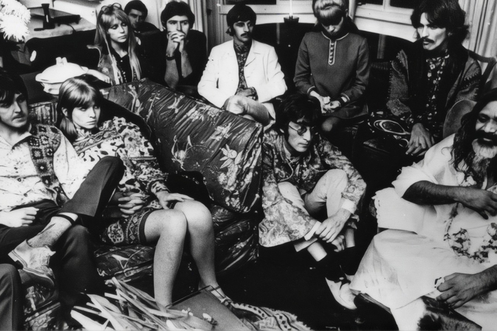
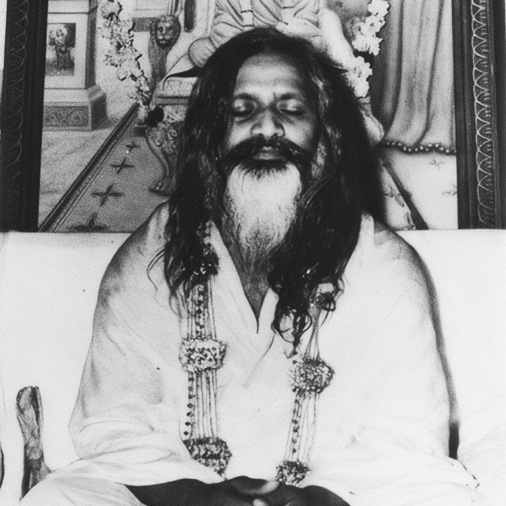
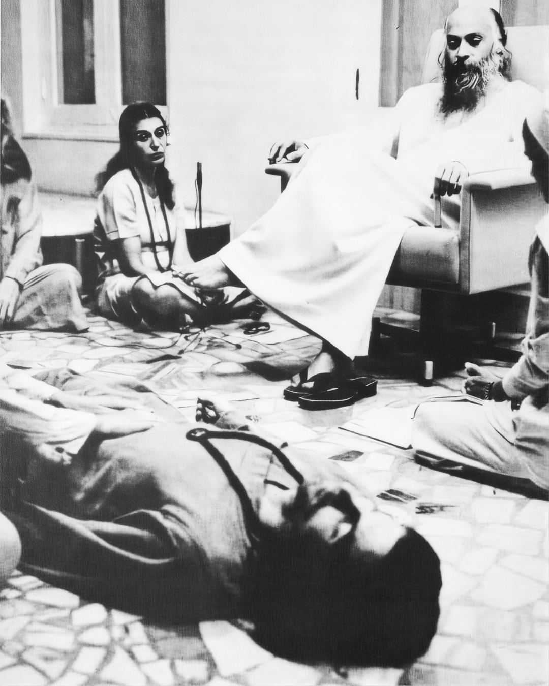
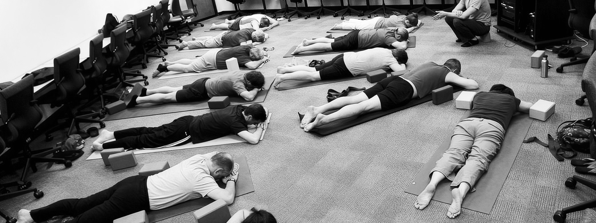
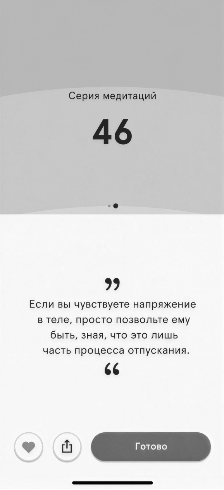
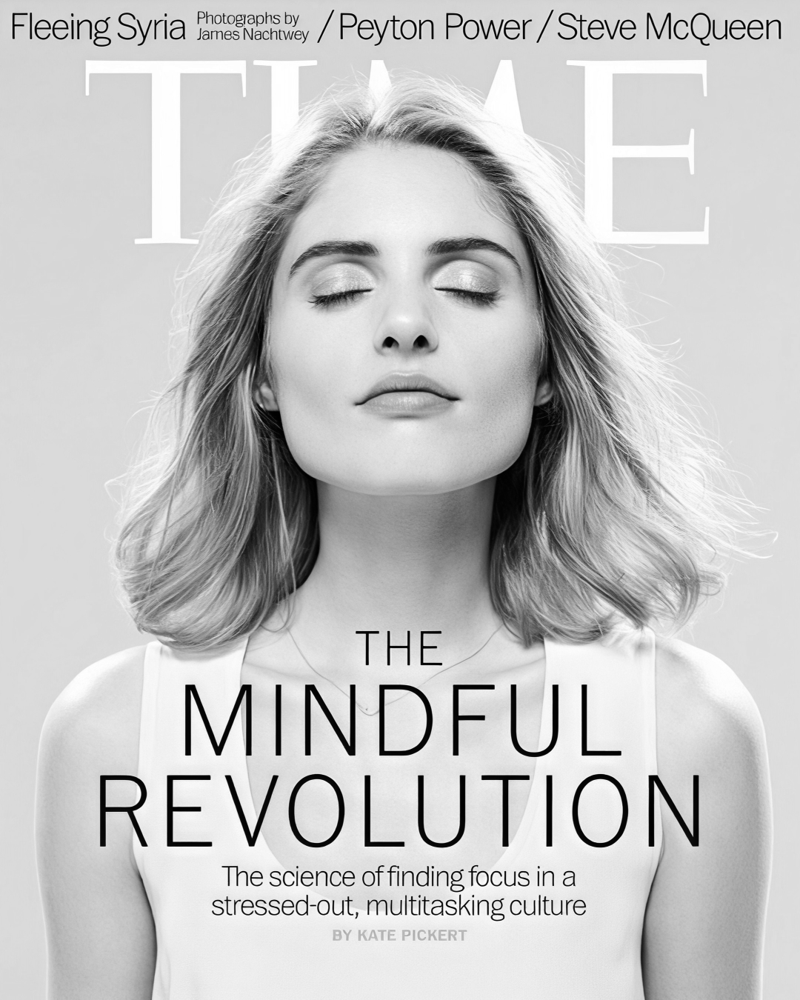
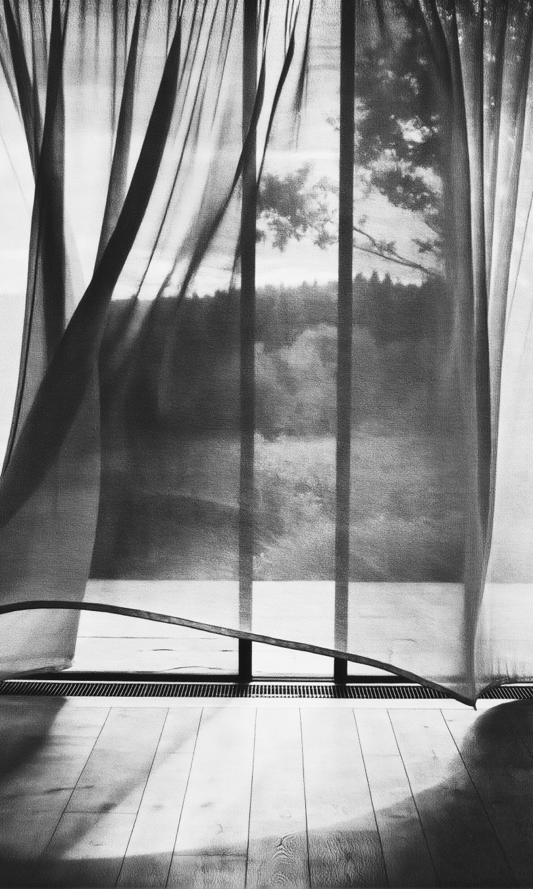

В собирательной модели ниже разберём три вещи: что измеряет счётчик, к чему ведёт кнопка и как обозначена граница бесплатного доступа.
Часть послевоенного Запада ищет опору не в церкви. Покой всё чаще описывают как личную задачу.
Судзуки читает лекции о дзен в Нью-Йорке; Алан Уоттс знакомит с ним западного читателя в «The Way of Zen» (1957); к нему обращаются битники. Это одна из линий распространения практики, а не прямая дорога от кризиса веры к приложению.


Махариши и трансцендентальная медитация; Битлз едут в Ришикеш. Практика входит в поп-культуру Запада.
Восток становится модой: мантра, ашрам, гуру попадают на обложки.


Джон Кабат-Зинн создаёт MBSR в UMass: восьминедельную программу снижения стресса. Практика входит в клинику.
Практику описывают как программу с расписанием и упражнениями. Её результаты можно оценивать по клиническим показателям — например, по изменению уровня стресса.

| Неделя | Практика | Мин/день |
|---|---|---|
| 01 | дыхание · автопилот | 10 |
| 02 | сканирование тела | 20 |
| 03 | осознанное движение | 25 |
| 04 | стресс и реакция | 25 |
| 05 | реакция и ответ | 30 |
| 06 | осознанность в общении | 30 |
| 07 | практика без гида | 40 |
| 08 | интеграция · тишина | 45 |
Google запускает «Search Inside Yourself». У практики появляется корпоративный адресат. Как меняется обещание, когда за программу платит работодатель?
Рост, трансформация, лучшая версия себя.
Устойчивость к стрессу, концентрация, меньше пропусков работы. В центре — реакция человека на нагрузку.

Headspace (2010) и Calm (2012). Обложка Time «The Mindful Revolution» (2014). Пандемия 2020 — загрузки взлетают.
Эти механики могут поддерживать регулярную практику. Вопрос возникает, когда возвращение в приложение становится целью само по себе: помогает ли оно человеку или прежде всего увеличивает число сессий? Набор механик различается у разных сервисов.


Что меняется, когда покой оценивают через удержание пользователя?
Есть и другие модели доступа: Waking Up предлагает помощь тем, кто не может платить; Plum Village — бесплатный доступ. Их условия нужно рассматривать отдельно: бесплатность ещё не объясняет, как сервис обращается с вниманием пользователя.
Чтобы различить поддержку и удержание, стоит посмотреть, можно ли отключить напоминания, практиковать вне приложения и отказаться от подписки без лишних препятствий.
Один из тестов сервиса — даёт ли он тебе уйти.
Готово. Ничего подтверждать не нужно — тебя отпустили сразу.

Вы потеряете серию из 46 дней. Весь прогресс обнулится.
Скидка 50% на следующий год. Только сейчас, только для вас.
Заморозим подписку на месяц. Вернётесь, когда захотите.
Отмена вступит в силу после подтверждения по ссылке в письме. Письмо придёт в течение 30 дней.